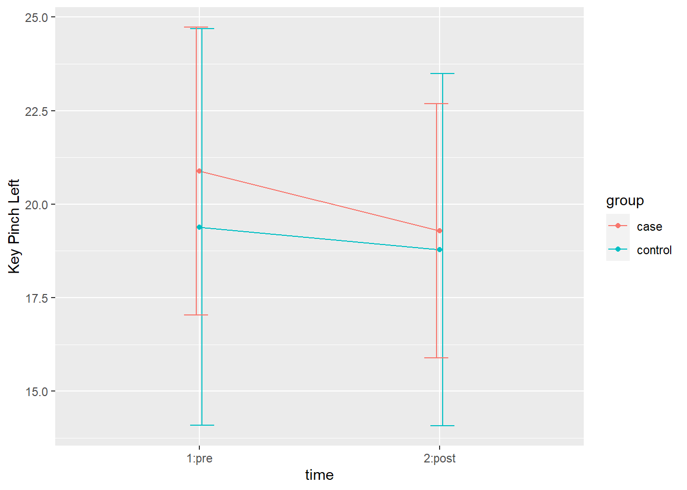
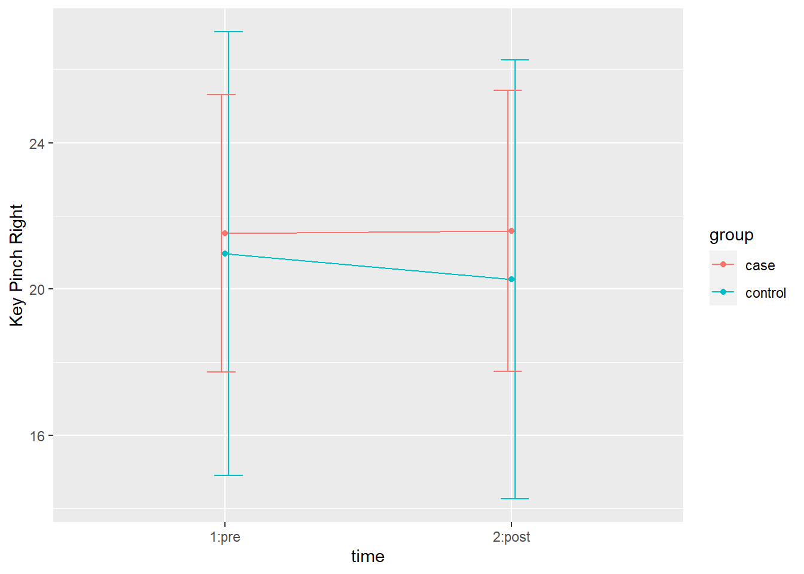

Last updated: 2024-02-14
Checks: 5 2
Knit directory: Collaborations/
This reproducible R Markdown analysis was created with workflowr (version 1.7.1). The Checks tab describes the reproducibility checks that were applied when the results were created. The Past versions tab lists the development history.
The R Markdown file has unstaged changes. To know which version of
the R Markdown file created these results, you’ll want to first commit
it to the Git repo. If you’re still working on the analysis, you can
ignore this warning. When you’re finished, you can run
wflow_publish to commit the R Markdown file and build the
HTML.
Great job! The global environment was empty. Objects defined in the global environment can affect the analysis in your R Markdown file in unknown ways. For reproduciblity it’s best to always run the code in an empty environment.
The command set.seed(20210523) was run prior to running
the code in the R Markdown file. Setting a seed ensures that any results
that rely on randomness, e.g. subsampling or permutations, are
reproducible.
Great job! Recording the operating system, R version, and package versions is critical for reproducibility.
Nice! There were no cached chunks for this analysis, so you can be confident that you successfully produced the results during this run.
Using absolute paths to the files within your workflowr project makes it difficult for you and others to run your code on a different machine. Change the absolute path(s) below to the suggested relative path(s) to make your code more reproducible.
| absolute | relative |
|---|---|
| C:/Shengtong/Research/AllCollaboration/Collaborations/analysis/Rfunctions.R | analysis/Rfunctions.R |
Great! You are using Git for version control. Tracking code development and connecting the code version to the results is critical for reproducibility.
The results in this page were generated with repository version 761c4ce. See the Past versions tab to see a history of the changes made to the R Markdown and HTML files.
Note that you need to be careful to ensure that all relevant files for
the analysis have been committed to Git prior to generating the results
(you can use wflow_publish or
wflow_git_commit). workflowr only checks the R Markdown
file, but you know if there are other scripts or data files that it
depends on. Below is the status of the Git repository when the results
were generated:
Ignored files:
Ignored: .Rhistory
Ignored: analysis/.Rhistory
Ignored: analysis/2022_Mar2_Marinho_cache/
Unstaged changes:
Modified: analysis/2024_0202_Ann.Rmd
Note that any generated files, e.g. HTML, png, CSS, etc., are not included in this status report because it is ok for generated content to have uncommitted changes.
These are the previous versions of the repository in which changes were
made to the R Markdown (analysis/2024_0202_Ann.Rmd) and
HTML (docs/2024_0202_Ann.html) files. If you’ve configured
a remote Git repository (see ?wflow_git_remote), click on
the hyperlinks in the table below to view the files as they were in that
past version.
| File | Version | Author | Date | Message |
|---|---|---|---|---|
| Rmd | db49477 | han | 2024-02-14 | 2/14/2024 |
| html | db49477 | han | 2024-02-14 | 2/14/2024 |
| Rmd | b84b61e | han | 2024-02-12 | 2/12/2024 |
| html | b84b61e | han | 2024-02-12 | 2/12/2024 |
| Version | Author | Date |
|---|---|---|
| db49477 | han | 2024-02-14 |
Paired t-test
data: sub_data$control_pre and sub_data$control_post
t = -0.78345, df = 8, p-value = 0.4559
alternative hypothesis: true mean difference is not equal to 0
95 percent confidence interval:
-1.0252784 0.5052784
sample estimates:
mean difference
-0.26
Paired t-test
data: sub_data$case_pre and sub_data$case_post
t = 0.28276, df = 13, p-value = 0.7818
alternative hypothesis: true mean difference is not equal to 0
95 percent confidence interval:
-0.796827 1.036827
sample estimates:
mean difference
0.12
Paired t-test
data: sub_data$control_pre and sub_data$control_post
t = -0.74552, df = 8, p-value = 0.4773
alternative hypothesis: true mean difference is not equal to 0
95 percent confidence interval:
-2.119339 1.083783
sample estimates:
mean difference
-0.5177778
Paired t-test
data: sub_data$case_pre and sub_data$case_post
t = -0.54121, df = 14, p-value = 0.5969
alternative hypothesis: true mean difference is not equal to 0
95 percent confidence interval:
-1.1017765 0.6577765
sample estimates:
mean difference
-0.222
Paired t-test
data: sub_data$control_pre and sub_data$control_post
t = -0.75932, df = 8, p-value = 0.4694
alternative hypothesis: true mean difference is not equal to 0
95 percent confidence interval:
-7.028752 3.546530
sample estimates:
mean difference
-1.741111
Paired t-test
data: sub_data$case_pre and sub_data$case_post
t = -3.3997, df = 13, p-value = 0.004745
alternative hypothesis: true mean difference is not equal to 0
95 percent confidence interval:
-3.8958910 -0.8683947
sample estimates:
mean difference
-2.382143
Paired t-test
data: sub_data$control_pre and sub_data$control_post
t = 0.3688, df = 8, p-value = 0.7218
alternative hypothesis: true mean difference is not equal to 0
95 percent confidence interval:
-4.272186 5.898852
sample estimates:
mean difference
0.8133333
Paired t-test
data: sub_data$case_pre and sub_data$case_post
t = -0.031174, df = 13, p-value = 0.9756
alternative hypothesis: true mean difference is not equal to 0
95 percent confidence interval:
-5.774588 5.610303
sample estimates:
mean difference
-0.08214286
Paired t-test
data: sub_data$control_pre and sub_data$control_post
t = 1.3474, df = 8, p-value = 0.2148
alternative hypothesis: true mean difference is not equal to 0
95 percent confidence interval:
-2.240112 8.537890
sample estimates:
mean difference
3.148889
Paired t-test
data: sub_data$case_pre and sub_data$case_post
t = -0.75396, df = 14, p-value = 0.4634
alternative hypothesis: true mean difference is not equal to 0
95 percent confidence interval:
-8.2892 3.9772
sample estimates:
mean difference
-2.156 
Paired t-test
data: sub_data$control_pre and sub_data$control_post
t = 0.33348, df = 8, p-value = 0.7473
alternative hypothesis: true mean difference is not equal to 0
95 percent confidence interval:
-1.524765 2.040320
sample estimates:
mean difference
0.2577778
Paired t-test
data: sub_data$case_pre and sub_data$case_post
t = 1.5589, df = 13, p-value = 0.143
alternative hypothesis: true mean difference is not equal to 0
95 percent confidence interval:
-0.3849813 2.3806956
sample estimates:
mean difference
0.9978571 
Paired t-test
data: sub_data$control_pre and sub_data$control_post
t = 0.14852, df = 8, p-value = 0.8856
alternative hypothesis: true mean difference is not equal to 0
95 percent confidence interval:
-2.162775 2.460553
sample estimates:
mean difference
0.1488889
Paired t-test
data: sub_data$case_pre and sub_data$case_post
t = -0.60899, df = 14, p-value = 0.5523
alternative hypothesis: true mean difference is not equal to 0
95 percent confidence interval:
-2.417705 1.348372
sample estimates:
mean difference
-0.5346667
sessionInfo()R version 4.3.2 (2023-10-31 ucrt)
Platform: x86_64-w64-mingw32/x64 (64-bit)
Running under: Windows 10 x64 (build 19045)
Matrix products: default
locale:
[1] LC_COLLATE=English_United States.utf8
[2] LC_CTYPE=English_United States.utf8
[3] LC_MONETARY=English_United States.utf8
[4] LC_NUMERIC=C
[5] LC_TIME=English_United States.utf8
time zone: America/Chicago
tzcode source: internal
attached base packages:
[1] grid stats graphics grDevices utils datasets methods
[8] base
other attached packages:
[1] condsurv_1.0.0 devtools_2.4.5 usethis_2.2.2 tidycmprsk_1.0.0
[5] gtsummary_1.7.2 ggsurvfit_1.0.0 irr_0.84.1 lpSolve_5.6.20
[9] readxl_1.4.3 cowplot_1.1.2 matrixStats_1.2.0 gridExtra_2.3
[13] DT_0.31 rstatix_0.7.2 ggpubr_0.6.0 kableExtra_1.3.4
[17] lubridate_1.9.3 forcats_1.0.0 stringr_1.5.1 dplyr_1.1.4
[21] purrr_1.0.2 readr_2.1.4 tidyr_1.3.0 tibble_3.2.1
[25] ggplot2_3.4.4 tidyverse_2.0.0
loaded via a namespace (and not attached):
[1] remotes_2.4.2.1 rlang_1.1.2 magrittr_2.0.3
[4] git2r_0.33.0 compiler_4.3.2 systemfonts_1.0.5
[7] vctrs_0.6.5 rvest_1.0.3 profvis_0.3.8
[10] pkgconfig_2.0.3 fastmap_1.1.1 backports_1.4.1
[13] ellipsis_0.3.2 labeling_0.4.3 utf8_1.2.4
[16] promises_1.2.1 rmarkdown_2.25 sessioninfo_1.2.2
[19] tzdb_0.4.0 xfun_0.41 cachem_1.0.8
[22] jsonlite_1.8.8 highr_0.10 later_1.3.2
[25] broom_1.0.5 R6_2.5.1 bslib_0.6.1
[28] stringi_1.8.3 car_3.1-2 pkgload_1.3.3
[31] jquerylib_0.1.4 cellranger_1.1.0 Rcpp_1.0.11
[34] knitr_1.45 httpuv_1.6.13 Matrix_1.6-1.1
[37] splines_4.3.2 timechange_0.2.0 tidyselect_1.2.0
[40] rstudioapi_0.15.0 abind_1.4-5 yaml_2.3.8
[43] miniUI_0.1.1.1 pkgbuild_1.4.3 lattice_0.21-9
[46] shiny_1.8.0 withr_2.5.2 evaluate_0.23
[49] survival_3.5-7 urlchecker_1.0.1 xml2_1.3.6
[52] pillar_1.9.0 carData_3.0-5 whisker_0.4.1
[55] generics_0.1.3 rprojroot_2.0.4 hms_1.1.3
[58] munsell_0.5.0 scales_1.3.0 xtable_1.8-4
[61] glue_1.6.2 tools_4.3.2 webshot_0.5.5
[64] ggsignif_0.6.4 fs_1.6.3 crosstalk_1.2.1
[67] colorspace_2.1-0 cli_3.6.2 workflowr_1.7.1
[70] fansi_1.0.6 broom.helpers_1.14.0 viridisLite_0.4.2
[73] svglite_2.1.3 gt_0.10.0 gtable_0.3.4
[76] sass_0.4.8 digest_0.6.33 farver_2.1.1
[79] htmlwidgets_1.6.4 memoise_2.0.1 htmltools_0.5.7
[82] lifecycle_1.0.4 httr_1.4.7 mime_0.12